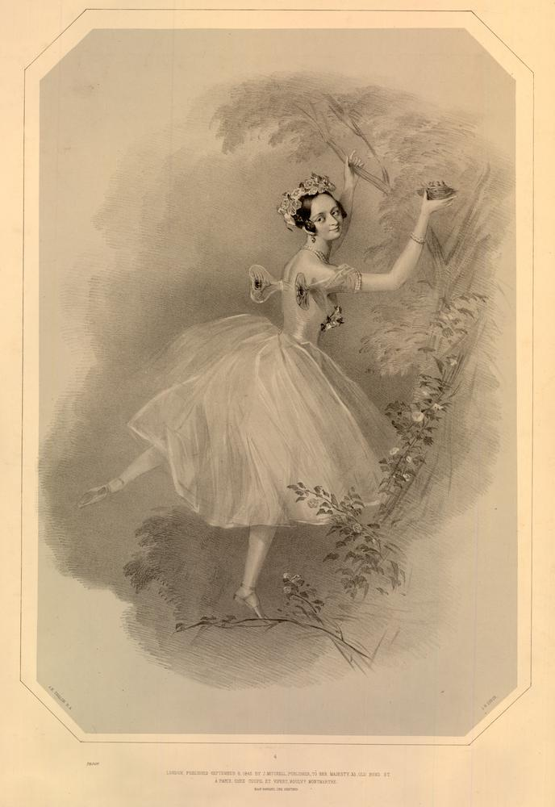

Marie Taglioni

Marie Taglioni
Foi uma das mais influentes bailarinas do século XIX e um verdadeiro ícone da era romântica do ballet. Nascida em 23 de abril de 1804, em Estocolmo, Suécia, ela era filha do coreógrafo italiano Filippo Taglioni, que teve um papel decisivo na formação de sua carreira e técnica.
Desde muito jovem, Marie foi treinada rigorosamente por seu pai, que adaptou os métodos de ensino ao seu físico, menos "forte" que o ideal da época. O resultado foi um estilo único: leveza, pureza de linha e uma elegância etérea que encantou o público europeu.
Marie Taglioni é amplamente reconhecida como a primeira bailarina a dançar na ponta dos pés com propósito artístico, e não apenas como truque técnico. Sua estreia nesse estilo revolucionário aconteceu no ballet La Sylphide, coreografado por seu pai em 1832.
Nesse papel, ela interpretava uma criatura mágica do ar — a Sylphide — e sua dança nas pontas simbolizava exatamente isso: um ser leve, inalcançável e sobrenatural. A imagem de Taglioni dançando com delicadeza e graciosidade, quase flutuando, se tornou o ideal da bailarina romântica.
Símbolo do Ballet Romântico, durante sua carreira, Marie Taglioni se apresentou nos mais importantes teatros da Europa, incluindo a Ópera de Paris, onde foi estrela. Ela foi reverenciada não apenas por sua técnica, mas por sua expressividade contida, espiritualidade e estilo etéreo, que definiram o ideal da bailarina romântica.
Ela também dançou em outras obras marcantes, como:Robert le Diable (na famosa “Dança das Freiras”)
La Gitana
La Fille du Danube
Legado:
Marie Taglioni se aposentou dos palcos em 1847 e mais tarde trabalhou como professora e ensaiadora.
Sua influência permanece viva até hoje — tanto na técnica como na estética do balé clássico.
Ela ajudou a moldar a imagem da bailarina como um ser quase sobrenatural, símbolo de leveza, virtude e arte pura. Sua figura inspirou pintores, escritores e músicos da época. Marie Taglioni faleceu em 22 de abril de 1884, em Marselha, mas seu nome continua eternamente ligado à magia do ballet.